ANIMATED FILM NOVEL · COMPLETE EDITION
原作 · 動畫 · 導演 郭志民
OFFICIAL SELECTION
AI FILM FEST 2026
AI FILM FEST 2026
CHAPTER 1被海風吹醒的孤島
金錢 0分數 0好感度 0
香港 · 報館
旁白
001 / 109
離島旅程 · 完
「累嗎？休息一會吧。人沒法掌控風向，但可以調整船的帆。
再前行，應該有更好的風景。」

ANIMATED FILM NOVEL · COMPLETE EDITION
原作 · 動畫 · 導演 郭志民
離島旅程 · 完
「累嗎？休息一會吧。人沒法掌控風向，但可以調整船的帆。
再前行，應該有更好的風景。」
CONTENTS
BACKLOG